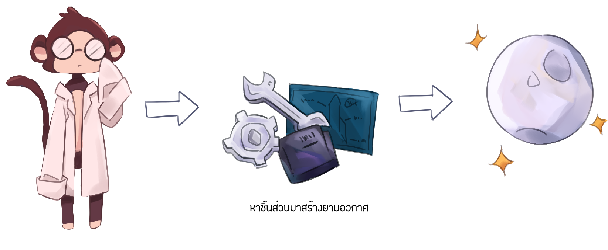

Control
Play Off
ผู้เล่นต้องหาทางพาดอกเตอร์วานรซีซ่าขึ้นไปบนดวงจันทร์ โดยผู้เล่นจะต้องเก็บชิ้นส่วนของยานอวกาศที่กระจัดกระจายอยู่ภายในศูนย์วิจัยมาประกอบเข้าด้วยกัน ถ้าผู้เล่นสามารถพาดอกเตอร์วานรซีซ่าขึ้นไปบนดวงจันทร์ได้จะสามารถดูรายละเอียดของ Space Race ได้
เมื่อต้องการปล่อยยานให้ผู้เล่นกดปุ่ม E ที่รูปภาพด้านล่างเพื่อปล่อยยาน

Obstacle
อุปสรรคของเกมนี้คือ หากผู้เล่นถูกหมาโซเวียตตีพลังจะลดลงหากถูกตีจนพลังหมดหลอดผู้เล่นจะตายและเกมจะจบทันทีเมื่อจบเกมผู้เล่นสามารถเริ่มเกมใหม่ได้